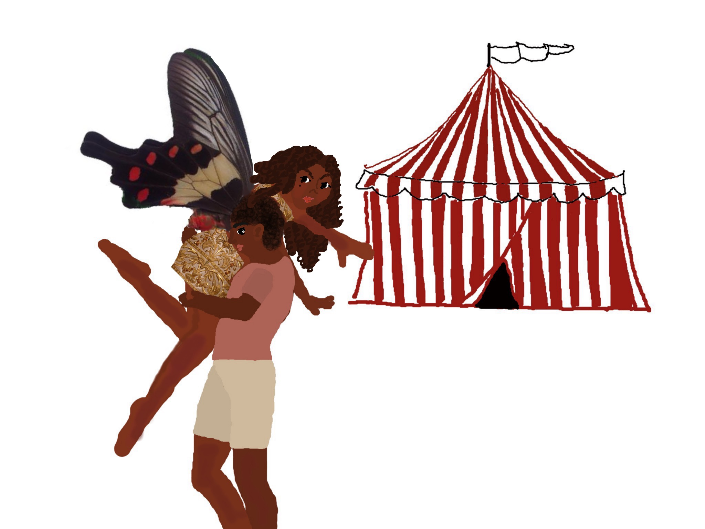
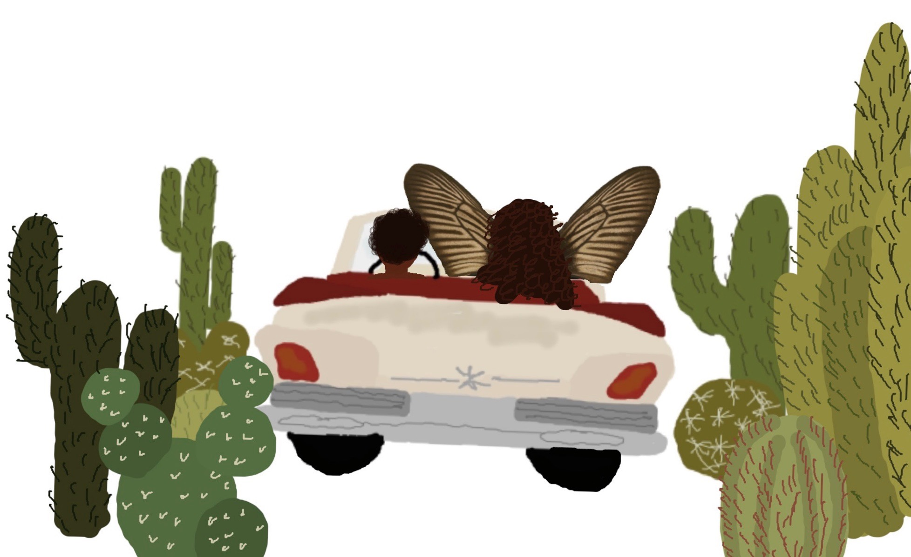
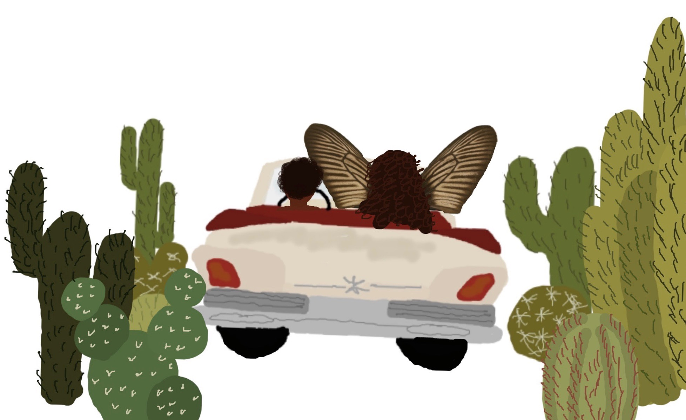
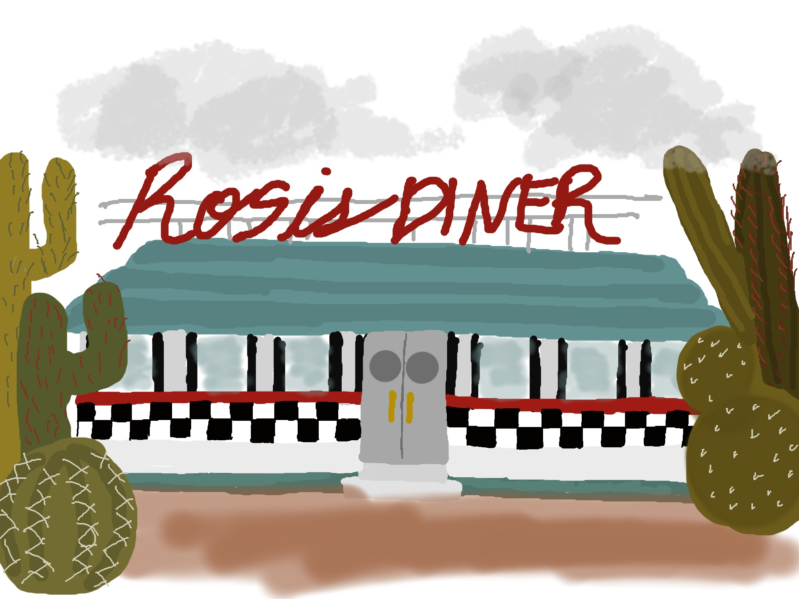
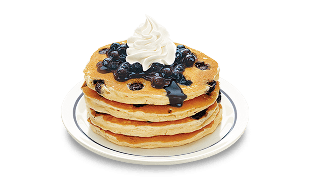

They drove down a road, the dust caking behind them. It was an old white convertible open to the entire earth, the mountains in the distance and the desert that buzzed outside. She slept in the backseat of the car, and he drove in the front, following the road, picking the directions on a whim. It was hot and dusty outside, the air was dry and there was nothing they could do but embrace the heat as it came. She awoke in a light sweat, she’d forgotten where she was, who she was, and then she became stubborn in a pout. She had no means of expressing such feelings and so she climbed up into the front seat, holding onto the sides of the car, careful of being tossed away. She sat in the passenger seat, kicking her feet up onto the dashboard and watching the boy as he drove. She watched him in disgust. She felt a strong connection to the boy, yet she was so angry with him, for she couldn’t understand him. He had taken her away from what she had known.
 

The boy then became hungry, pulling the car over to a small diner on the side of the road. They parked amidst a luscious network of cactus and shrubs, and they climbed out walking up to the big red and blue cursive sign, the lights about to die out. The boy grabbed onto the girl, careful to not lose her from his sight, careful of boxing her in, so she wouldn’t hide away. It was around late afternoon and the room was sticky with a quaint disposition. Poppy sat in the booth overwhelmed by the menu, lost in every letter and every word. The boy struggled to decide between the chicken and waffles or the blueberry pancakes. A woman on roller skates, rolled up to them on the checkered floor, Poppy followed the wheels with her eyes. The waitress stared at Poppy in confusion and surprise. The boy ordered for him, and then he ordered for her, and then they sat and waited.

“I saved you” the boy said suddenly trying to clear the air, trying to make amends. Poppy stared at him in disbelief, she shook her head violently in disgust, she would rather be dead, then to be on display of the world like a fool. “I did too!” said the boy, but Poppy plugged her ears. She looked around the room to make a break for it, she wanted to run away. She had liked the circus, because it was all she had ever known, even through the ridicule and pain, she was afraid to step beyond it. It had become a home to her, and there was comfort in the fears she’d known so long. She didn’t know how to tell this to the boy, and so she began planning in her head. She planned to kill him and make a run for it, back into the heavens. The waitress brought out milkshakes, banana for the boy, strawberry for the girl. The boy nudged it toward Poppy. She sipped it and almost smiled. The boy sat waiting to see her reaction. She smiled, and she laughed, she couldn’t hold it in, and she drank the whole thing in minutes, falling back into the red cushions in a headache. The boy laughed, “You have to taste it slowly” he said “you can’t drink it all at one time”.


Poppy was not amused. Their meal came and they ate it up like ravenous monsters, licking the plates clean. When they were finished the boy grabbed the girl, pushing her out by the shoulders, as she fought, and they ran away without leaving a cent, before anyone noticed she had been kidnapped, before anyone noticed they were gone, where no one could ever find them, and the girl felt disgusted.
Next